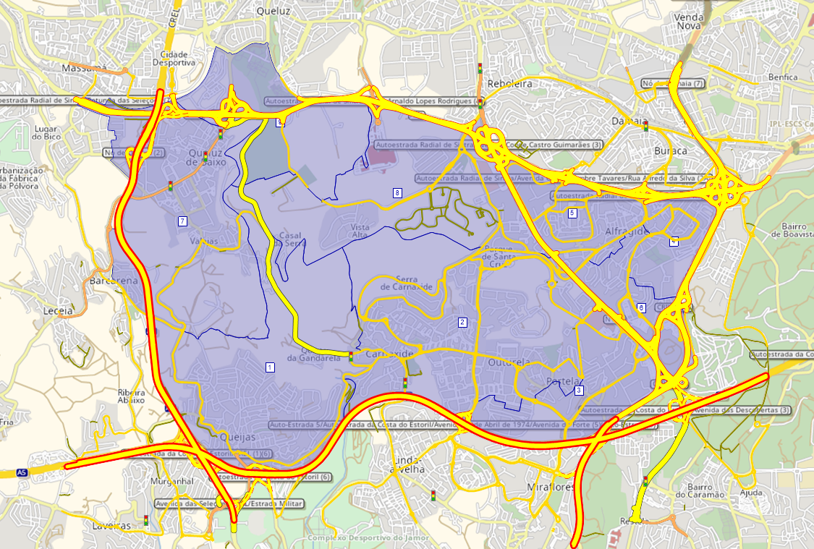

Case Study Macro
Data
Please download the VISUM project file (.ver) with the base data that you will need.
Road Network
We are using a road network exported from OpenStreetMap.
We already imported that network to this project as follows:
- Select only Urban Road Network (to keep the principal roads)
This is what it looks like when importing from OSM.
Check network integrity
Start by these ones (General, and links not connected to the network)
ignore warnings
Set to active the ones you want to have a look. They are now active/selected. Delete if needed (DEL button)
Zones
These are the zones to consider in the area.
They are from census 2021 sections, and aggregated in larger TAZ.
This is how it looks like after importing the shapefile of zones to the project.

OD Matrix
Create an OD matrix

Give it a proper name.
And copy-paste data from excel
Now you have your OD matrix with data for your HA Group
Procedures
After creating all Zones’ Connectors
Create PrT1 assignment
And then you need to explicit where the data comes from (your matrix). Go to menu: Demand ⟶ Demand Data
Select your matrix.
It is a good practice to add a Delete assignment results in the beginning of your procedure sequence.
Then run! üèÉ
Other things you can do
Create a link
I will first check the characteristics of the previous link that I’m connecting to, by double-click the link in the editor, and see the details. The Quick View panel also shows some of its information.
This is a Type no 50.
Create a link by connecting both nodes.
When creating a link, a window will popup to define some of the link parameters. In this case I will also make it a type 50 link.
Clicking 2 times in the new link, you can change some of the parameters. It will highlight the ones that are not mirrored to the opposite direction - you should also transfer the new modifications.
To make realistic links, activate background map before proceeding.
Verify if the link is well connected with Check network integrity, or estimating a shortest path between zones (with connectors).
Shortest path

Click on 2 zones and run.
See the opposite direction
Reset for a new one.
Flow Bundle
The Flow Bundle function can be useful for quantifying the traffic volume in a single link, broken down by the origins/destinations which have the most weight in that link.
Graphics ⟶ Flow Bundle ⟶ choose the link ⟶ Play ⟶ go to matrices and see the new Formula Matrices/ Flow Bundle ⟶ list view ⟶ sort by volume.
Selection Mode
Labels
Change the zone label to name:
The same if you want to remove the symbol representation of links
You can save these visualization as a Graphic parameter file, so you can shift between one or more, depending on the assessment you are doing.
Footnotes
Private Transport↩︎